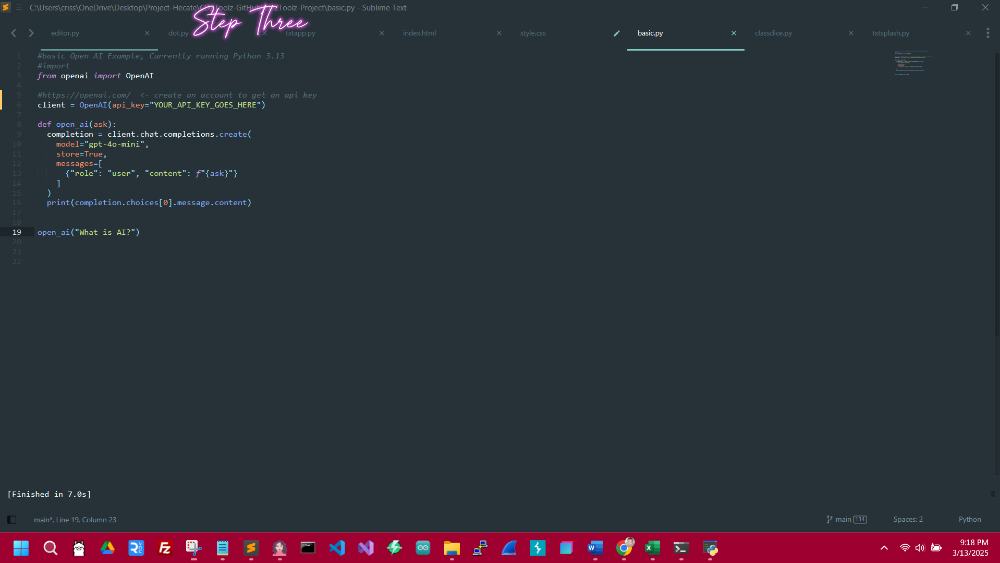
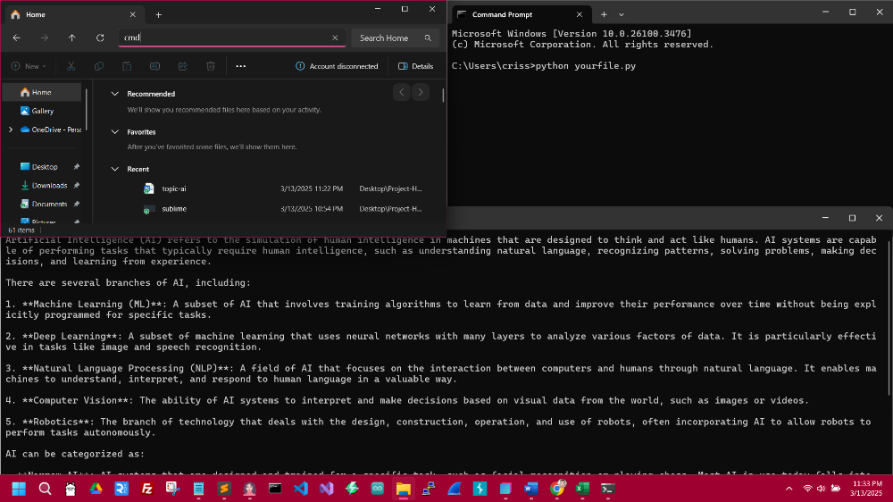
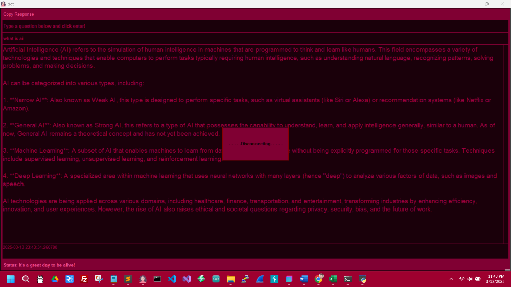

Hello! This is my first post! I’m Crissy, and I’m delighted to welcome you to my portfolio/blog. I have always had a deep passion for computers, especially programming. I enjoy discovering innovative ways to streamline tasks, often reducing them to just a few clicks. Some time ago, I was introduced to a remarkable open-source AI system called OpenAI, which sparked my interest. I eagerly began utilizing the scripts provided upon signing up, and it has been an exciting journey ever since!
I did edit it somewhat to a simple reusable function.
#basic Open AI Example, Currently running Python 3.13
#import
from openai import OpenAI
#https://openai.com/ <- create a account to get an api key
client = OpenAI(api_key="YOUR_API_KEY_GOES_HERE")
def open_ai(ask):
completion = client.chat.completions.create(
model="gpt-4o-mini",
store=True,
messages=[
{"role": "user", "content": f"{ask}"} #within the format string f"{ask}" it good to possibly throw in a ..{current_date}
]
)
print(completion.choices[0].message.content)
open_ai("What is AI?")
As I noted in one of the comments within the code example above, it is good to include the date (https://docs.python.org/3/library/datetime.html) because, at times, it will request it anyway.
While numerous methods exist to fine-tune the AI, this approach is a solid starting point. Also, you can even ask OpenAI how to edit it to fit your needs, and the response will include details or even code to make whatever you want. So, stay tuned, and I will guide you through the steps to get this up and running on your device in no time.
**First Step** You will need a text editor.
I like Sublime, but there are several others available:
Sublime Text, Visual Studio Code, NotePad++, Brackets, and plenty more, but these are really good and free.
**The Second Step** https://www.python.org/downloads/
Windows: Download Python!
Once you open it, the first prompt at the bottom will ask if you want to add python.exe to PATH, check it and use admin privileges.
Then, it is recommended that you click “Install Now” and keep pushing forward until it is completed without changing anything else.
Mac: Open terminal (Press "Cmd+Space" to open the search, and type terminal and press enter).
/bin/bash -c "$(curl -fsSL https://raw.githubusercontent.com/Homebrew/install/HEAD/install.sh)"
Then paste it in the terminal and click enter. Once Homebrew
is installed, type: brew install python and click enter.
Afterward, you can use python3 --version in the terminal to verify the installation. Additionally, you can go to the Python webpage and download the universal installer.
Linux: Open the terminal (Ctrl+Alt+T) and type in sudo apt update.
Then, sudo apt install python3. Lastly, check to ensure it’s installed: python3 --version.
**Step Three**
Copy the code above and paste it into your text editor.

**Step Four**
If you haven’t installed pip yet, then visit: https://pip.pypa.io/en/stable/installation/
Open terminal, type: pip install openai
Once the download is complete, you are ready to roll!
You can go to File Explorer in the directory area, type cmd and click enter to open the prompt in that directory, press the start button on some text editors, or use Ctrl+B in Sublime Text.
In the terminal, type python yourpythonfile.py and click enter.
Also, you can eventually get creative with it using Tkinter to add GUI, which I will be going over on a separate page very soon, but I will include a screenshot below to give an idea.

